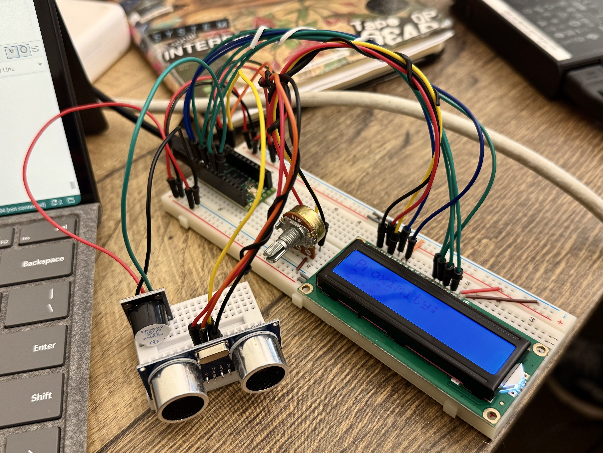

I have marked my more interesting experiments with a ★.
Some experiments are simply "can I get it to work?" tests,
and some experiments build on others and are slightly more complex.
Experiment #2: Laser beam detection by photocell activates LED + Buzzer
Includes features of Experiment #1, upgraded to play randomised tones via a buzzer.
The concept is loosely based on a laser harp, except I only have 1 laser and the laser needs to be manually aimed, and the buzzer plays unpredictable tones while laser beam maintains contact w photocell
Experiment #3: Temperature/Humidity sensor and two-colour LED indicator
Uses a temperature and humidity sensor to calculate heat index. LED (starts at green) indicates if the environment is warming up (green->yellow->orange->red) or cooling down (reverse)
It's kind of, but not really real-time processing because the sensor is slow, so the visual feedback is delayed.
I tested this by breathing hot air on it to trigger temperature and humidity fluctuations.
Potential bug - I'm not sure why the LED colour turns yellow/orange immediately on load. It cools down eventually though. Is it something in my code, or is the component detecting a bump in temperature from my system running?
Modules Used: DHT11 Temperature & Humidity Module, Two-colour LED | Libraries Used: DHT Sensor Library by Adafruit
The goal of this exercise was to get the LCD wired up and displaying text, and being able to adjust contrast with a potentiometer.
Displays a Hello World counter for how long the system has been running (in seconds)
The majority of this code isn't mine (I loaded in hello world code from arduino.cc docs), I just copied and pasted from the arduino.cc example and updated my pin references.
I noticed that my LCD screen is very sensitive to touch/wires being bumped which scrambles the input signal to the LCD
Experiment #6: Ultrasonic Sensor + Active Buzzer + LCD 1602

Ultrasonic sensor detects proximity and Active buzzer beeps more rapidly the closer you get.
Distance brackets: 0-5cm, 5-15cm, 15-20cm
Distance in cm displayed on LCD
Observation: Buzzer is unusually quiet, maybe because it is competing for power w/ other components?
In this experiment I realised I want to be able to run tasks asynchronously. Using delay() to space out the proximity reports holds up the entire loop (as designed), but I want the proximity report to update independently of the buzzer behaviour. I will look into this in further experiments
Modules Used: Ultrasonic sensor module, Active buzzer, LCD 1602 Module